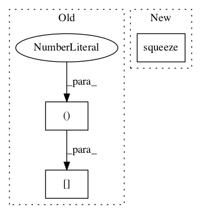

f36052b395dc48a473dcc5b49d8d9a3b5d6f58ba,gpflow/conditionals/mo_conditionals.py,,separate_independent_conditional,#,90

Before Change
fmu = rollaxis_left(rmu[..., 0], 1) // [N, P]
if full_cov:
fvar = rvar[..., 0, :, :] // [P, N, N]
else:
fvar = rollaxis_left(rvar[..., 0], 1) // [N, P]
After Change
single_gp_conditional, (Kmms, Kmns, Knns, fs, q_sqrts), (default_float(), default_float())
) // [P, N, 1], [P, 1, N, N] or [P, N, 1]
fmu = rollaxis_left(tf.squeeze(rmu, axis=-1), 1) // [N, P]
if full_cov:
fvar = tf.squeeze(rvar, axis=-3) // [..., 0, :, :] // [P, N, N]
In pattern: SUPERPATTERN
Frequency: 3
Non-data size: 3
Instances
Project Name: GPflow/GPflow
Commit Name: f36052b395dc48a473dcc5b49d8d9a3b5d6f58ba
Time:
Author: null
File Name: gpflow/conditionals/mo_conditionals.py
Class Name:
Method Name: separate_independent_conditional
Project Name: GPflow/GPflow
Commit Name: f36052b395dc48a473dcc5b49d8d9a3b5d6f58ba
Time:
Author: null
File Name: gpflow/conditionals/util.py
Class Name:
Method Name: sample_mvn
Project Name: GPflow/GPflow
Commit Name: f36052b395dc48a473dcc5b49d8d9a3b5d6f58ba
Time:
Author: null
File Name: gpflow/conditionals/util.py
Class Name:
Method Name: fully_correlated_conditional